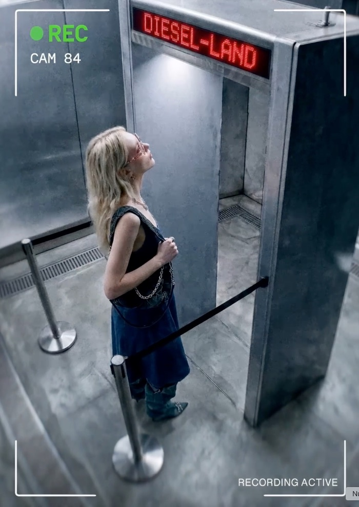
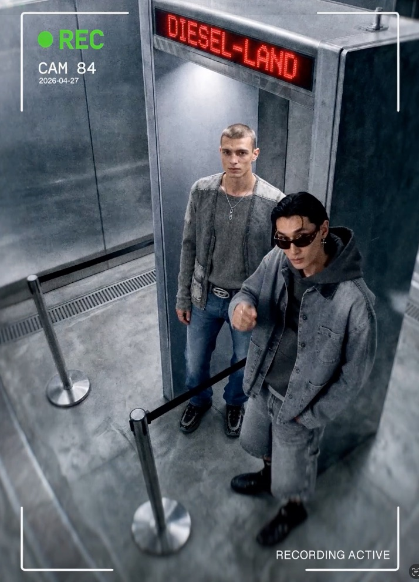

Image / fashion campaign
Real Metal
A Diesel jewellery campaign built against the shortcut branded clothing sells: buy the label, become real. The argument here runs the other way. You do not have to wear Diesel to be real — you are real, so you are Diesel.
- Year
- 2026
- Kind
- Image
- Role
- Concept, art direction, generative production
- Frames
- 9:16 reel, CCTV-framed stills
The premise
A gate that can only scan metal.
Diesel-Land screens everyone at the door, and the detector reads exactly one thing: hardware. It has nothing to say about how a person carries it, which is the only part that decides whether they belong.


Open the work
Primary sources.
Structure
Real metal, real attitude.
Three frames, one argument. The gate measures the metal; the people supply everything the metal cannot.
-
Frame I
Diesel-Land
The brand as a theme park, borrowing the toy-shop register Diesel has played in before. Admission looks like something you could buy.
-
Frame II
The gate
A metal detector under the sign, counting chains and buckles and learning nothing at all about the person wearing them.
-
Frame III
The verdict
The question is not whether the metal is real, but whether the attitude is. Only one of the two sets off the machine.
How it was built
Pipeline.
Generated end to end for the Runway AI Film Festival 2026. The campaign has no licence and no photographer, and still reads as unmistakably Diesel — which is the same argument the images are making about people.
Concept and shot order fixed before a single frame was generated: one camera, one gate, one argument.
Character, wardrobe, and set continuity carried across every camera position.
A desaturated concrete palette, so the red sign and the chrome are the only colour left.
The CCTV overlay applied last — camera number, timestamp, recording state — so the jewellery reads as evidence rather than product.